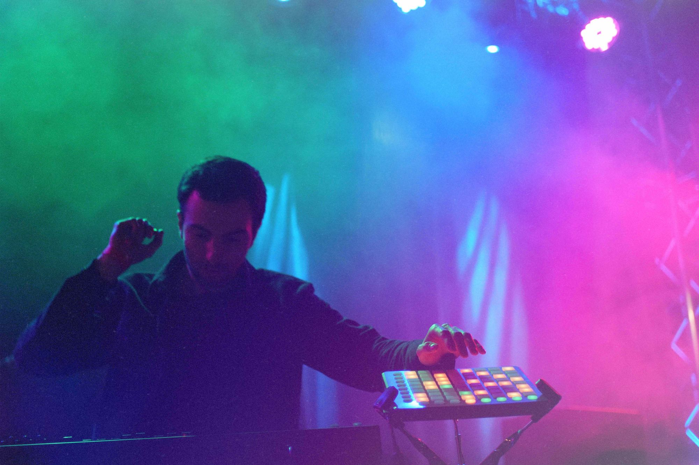

Music

Vision Field is the project of Michael Remington. In 2017 he was one of 16 up-and-coming Seattle producers invited to perform in a competition judged by 4-time Grammy award-winner Ryan Lewis of Macklemore. He has opened for notable artists like 2-time Grammy nominee K.Flay, Phantoms, Lusine, and Beat Connection.